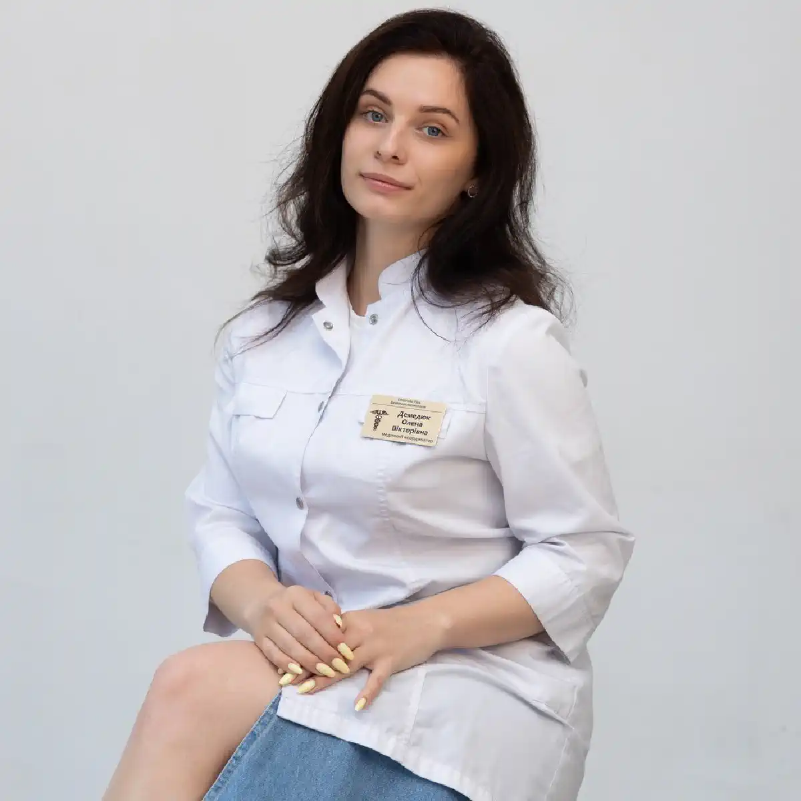

+38(068) 79 72 782
+38(068) 79 72 782Лікування алкоголізму у Запоріжжі
Шанс на життя без залежності


Безкоштовна консультація, працюємо цілодобово 24/7
Шанс на життя без залежності

Алкогольна залежність є серйозним хронічним захворюванням, яке чинить руйнівний вплив на здоров’я людини, її психіку та соціальне життя. З часом регулярне вживання алкоголю призводить до формування стійкої залежності, при якій людина втрачає контроль над кількістю випитого і не може самостійно відмовитися від спиртного. Поступово алкоголь починає займати центральне місце в житті людини, витісняючи роботу, сім’ю, інтереси та звичні соціальні зв’язки.
Під впливом алкоголю порушується робота багатьох систем організму. Насамперед страждають печінка, серце, нервова система та органи травлення. Тривале вживання спиртних напоїв може призводити до розвитку серйозних захворювань, таких як цироз печінки, панкреатит, гіпертонічна хвороба, порушення пам’яті та психічні розлади. Крім фізичних наслідків, алкогольна залежність часто супроводжується соціальними проблемами — конфліктами в сім’ї, зниженням працездатності та погіршенням якості життя.
Лікування алкоголізму в Запоріжжі потребує комплексного та професійного підходу. Сучасна наркологія розглядає залежність не лише як шкідливу звичку, а як захворювання, що зачіпає фізіологічні, психологічні та соціальні аспекти життя людини. Саме тому ефективна терапія включає кілька етапів: детоксикацію організму, медикаментозну підтримку, психологічну допомогу та етап реабілітації. На першому етапі проводиться очищення організму від токсичних продуктів розпаду алкоголю. Детоксикаційна терапія допомагає знизити рівень інтоксикації, відновити водно-електролітний баланс і стабілізувати загальний стан пацієнта. Після цього призначається медикаментозна підтримка, спрямована на відновлення роботи внутрішніх органів і зниження тяги до алкоголю.
Важливою частиною лікування є психологічна допомога. Фахівці допомагають пацієнту розібратися в причинах формування залежності, навчитися справлятися зі стресом без уживання алкоголю та змінити звичні моделі поведінки. Такий підхід дозволяє закріпити результат лікування і знизити ризик повторних зривів. Своєчасне звернення до лікаря-нарколога дозволяє значно підвищити шанси на успішне лікування та запобігти розвитку серйозних ускладнень, пов’язаних із тривалим уживанням алкоголю. Чим раніше людина отримує кваліфіковану медичну допомогу, тим швидше вдається стабілізувати стан організму і розпочати шлях до відновлення та тверезого життя.
Алкогольна залежність розвивається поступово, і на ранніх етапах її симптоми можуть залишатися непомітними як для самої людини, так і для її близьких. Багато людей тривалий час не сприймають проблему серйозно, пояснюючи часте вживання алкоголю стресом, втомою або традиціями відпочинку. Однак з часом уживання спиртного стає регулярним, а контроль над кількістю випитого поступово втрачається. Саме в цей період починають проявлятися характерні ознаки, які свідчать про формування алкогольної залежності. До основних ознак алкоголізму належать:
З часом організм починає адаптуватися до регулярного надходження етанолу, і людина дедалі частіше вдається до алкоголю, щоб зняти напруження або покращити настрій. З’являється так звана психологічна залежність, при якій алкоголь стає звичним способом вирішення проблем або втечі від стресових ситуацій. У міру прогресування захворювання людина починає вживати алкоголь дедалі частіше, а періоди тверезості стають дедалі коротшими. У деяких випадках виникають тривалі запої, під час яких людина може вживати алкоголь кілька днів поспіль. Такий стан супроводжується вираженою інтоксикацією організму та серйозним навантаженням на внутрішні органи.
Алкогольна залежність — це захворювання, яке з часом лише прогресує. Без професійної допомоги стан може поступово погіршуватися, призводячи до серйозних медичних і соціальних наслідків. Саме тому при появі перших ознак залежності рекомендується якомога раніше звернутися за консультацією до фахівця. Рання діагностика і своєчасне лікування дозволяють значно підвищити шанси на успішне відновлення і повернення до повноцінного життя без алкоголю.
Алкогольна залежність — це хронічне захворювання, при якому формується патологічна тяга до вживання спиртних напоїв. В основі цього стану лежать зміни в роботі центральної нервової системи та порушені біохімічні процеси в організмі. Регулярне надходження етанолу впливає на нейромедіатори мозку, які відповідають за настрій, відчуття задоволення та емоційний стан. З часом організм починає сприймати алкоголь як необхідну речовину, без якої погіршується загальне самопочуття.
На перших етапах алкоголь уживається епізодично, найчастіше в компанії, на свята або в ситуаціях, пов’язаних із відпочинком. Поступово формується звичка, і людина починає використовувати алкоголь як спосіб зняти стрес, розслабитися після роботи або покращити настрій. У цей період багато хто не сприймає вживання спиртного як проблему, однак саме на цьому етапі починають формуватися передумови для розвитку залежності. З часом уживання алкоголю стає більш регулярним. Організм адаптується до впливу етанолу, і для досягнення попереднього ефекту людині потрібна дедалі більша кількість спиртного. Поступово розвивається толерантність до алкоголю — стан, при якому звичні дози перестають викликати бажаний ефект.
На пізніших стадіях формується фізична і психологічна залежність. Людина починає відчувати виражену тягу до алкоголю, а відмова від його вживання супроводжується погіршенням самопочуття. З’являються симптоми абстинентного синдрому — тремор рук, тривожність, дратівливість, підвищене потовиділення, порушення сну, прискорене серцебиття і загальне відчуття внутрішнього дискомфорту.
Психологічна залежність проявляється в тому, що алкоголь стає основним способом справлятися з життєвими труднощами, стресом і емоційним напруженням. У результаті людина дедалі частіше вдається до вживання спиртного, що поступово призводить до формування стійкої залежності. Без своєчасного лікування алкогольна залежність має тенденцію до прогресування. Тому при появі перших ознак захворювання важливо звернутися за професійною допомогою. Сучасні методи лікування дозволяють стабілізувати стан пацієнта, знизити тягу до алкоголю і допомогти людині повернутися до повноцінного життя без залежності.
Хронічне вживання алкоголю чинить руйнівний вплив практично на всі системи організму. Етанол і продукти його розпаду мають виражену токсичну дію, порушують обмінні процеси і поступово ушкоджують життєво важливі органи. Особливо сильно страждають печінка, серце, нервова система, органи травлення і судинна система. Печінка бере на себе основне навантаження при переробці алкоголю, тому саме вона найчастіше зазнає серйозних ушкоджень. Поступово розвивається жирова дистрофія печінки, алкогольний гепатит і цироз. Серцево-судинна система також страждає від регулярного вживання спиртного: підвищується артеріальний тиск, порушується серцевий ритм і зростає ризик інфаркту та інсульту.
Алкоголь негативно впливає і на нервову систему. При тривалому вживанні можуть з’являтися порушення пам’яті, погіршення концентрації уваги, зниження інтелектуальних здібностей і емоційна нестабільність. У багатьох людей розвиваються тривожні розлади, депресія та інші психічні порушення. Алкоголізм може призвести до таких наслідків, як:
Крім медичних проблем, алкогольна залежність чинить серйозний вплив на соціальне життя людини. Зловживання спиртним часто призводить до конфліктів у сім’ї, погіршення стосунків із близькими, зниження працездатності та втрати роботи. З часом людина може зіткнутися із соціальною ізоляцією, фінансовими труднощами та серйозним погіршенням якості життя. Саме тому хронічний алкоголізм потребує своєчасного лікування. Чим раніше людина звертається за медичною допомогою, тим більше шансів запобігти тяжким наслідкам для здоров’я і відновити нормальне життя без залежності.
Чим раніше починається лікування алкогольної залежності, тим вища ймовірність успішного результату і стійкої ремісії. На початкових стадіях захворювання зміни в організмі ще можуть бути зворотними, а людині легше відмовитися від уживання алкоголю за підтримки фахівців. Однак на практиці багато пацієнтів звертаються по допомогу лише на пізніх етапах захворювання, коли залежність уже сформувалася, а організм серйозно постраждав від тривалого впливу алкоголю.
Алкогольна залежність має тенденцію до поступового прогресування. З часом збільшується частота вживання спиртного, зростає толерантність до алкоголю і погіршується загальний стан здоров’я. З’являються порушення сну, підвищена дратівливість, тривожність і погіршення працездатності. Без медичної допомоги такі зміни можуть призвести до розвитку тяжких ускладнень з боку печінки, серця і нервової системи. Приводом для звернення до лікаря є:
Також тривожним сигналом є ситуація, коли людина починає вживати алкоголь дедалі частіше, намагається приховувати проблему від близьких або не може самостійно відмовитися від спиртних напоїв навіть при погіршенні здоров’я.
Сучасні методи лікування алкоголізму ґрунтуються на комплексному підході. Це означає, що терапія спрямована не лише на усунення симптомів алкогольної інтоксикації, а й на роботу з причинами формування залежності. Алкоголізм розглядається як захворювання, яке зачіпає як фізичний стан організму, так і психологічний стан людини. Тому ефективне лікування включає кілька етапів і проводиться під наглядом фахівців. Комплексна терапія дозволяє не лише очистити організм від токсичних продуктів розпаду алкоголю, а й знизити тягу до спиртного, відновити роботу внутрішніх органів і допомогти людині змінити звичні моделі поведінки. Такий підхід значно підвищує ймовірність тривалої ремісії та запобігає повторним зривам. Основні методи лікування включають:
Індивідуальна програма лікування підбирається лікарем-наркологом з урахуванням стану пацієнта, тривалості вживання алкоголю та стадії залежності. Такий персоналізований підхід дозволяє зробити лікування максимально ефективним і безпечним.
Вартість лікування алкоголізму починається від 2199 грн.
Одним із перших етапів лікування алкогольної залежності є виведення із запою. Це медична процедура, спрямована на безпечне припинення тривалого вживання алкоголю та усунення симптомів інтоксикації. Під час запою в організмі накопичуються токсичні продукти розпаду етанолу, які негативно впливають на роботу нервової системи, серця, печінки та інших внутрішніх органів. Тому різке припинення вживання алкоголю без медичної допомоги може супроводжуватися погіршенням самопочуття і розвитком абстинентного синдрому.
Запійний стан часто супроводжується вираженою слабкістю, головним болем, нудотою, блюванням, стрибками артеріального тиску, прискореним серцебиттям, тривожністю та порушенням сну. У деяких випадках можуть з’являтися тремор рук, сильна дратівливість і психоемоційна нестабільність. Саме тому виведення із запою має проводитися під наглядом лікаря, який може контролювати стан пацієнта і своєчасно коригувати лікування.
Для проведення процедури застосовується інфузійна терапія — постановка крапельниці з детоксикаційними розчинами, вітамінами і препаратами для підтримки внутрішніх органів. Внутрішньовенне введення лікарських засобів дозволяє швидше доставити необхідні речовини в кровотік і прискорити процес очищення організму. Така терапія допомагає знизити рівень токсинів, відновити водно-електролітний баланс, стабілізувати артеріальний тиск і покращити загальний стан пацієнта.
Додатково лікар може призначити препарати для підтримки печінки, нормалізації роботи серцево-судинної системи, зменшення тривожності та відновлення сну. Комплексна терапія допомагає знизити прояви абстинентного синдрому, зменшити фізичний дискомфорт і поступово стабілізувати стан пацієнта. Виведення із запою є важливим етапом лікування, однак воно не усуває саму причину алкогольної залежності. Після стабілізації стану рекомендується продовжити лікування, яке може включати медикаментозну терапію, кодування і психологічну підтримку. Такий комплексний підхід допомагає знизити ризик повторних запоїв і розпочати шлях до повноцінного життя без алкоголю.
Кодування є одним із методів протирецидивної терапії, який застосовується після проведення детоксикації та стабілізації стану пацієнта. Основне завдання кодування — сформувати стійке негативне ставлення до вживання алкоголю і знизити ризик повторних зривів. Цей метод допомагає людині утримуватися від вживання спиртного і закріпити результат проведеного лікування. Кодування не є самостійним лікуванням залежності, однак воно може стати важливою частиною комплексної терапії. У поєднанні з медичною підтримкою, психологічною допомогою та реабілітацією цей метод значно підвищує шанси на тривалу ремісію і відмову від алкоголю. Існує кілька видів кодування:
Ефективність процедури значною мірою залежить від мотивації пацієнта і його готовності змінити спосіб життя. Найкращі результати досягаються при комплексному підході до лікування, який включає медичну допомогу, психологічну підтримку та подальшу реабілітацію.
Після проведення основного лікування важливим етапом є реабілітація. Вона допомагає людині адаптуватися до життя без алкоголю, відновити психологічний стан і сформувати нові здорові звички. На цьому етапі пацієнт вчиться справлятися зі стресом і життєвими труднощами без уживання спиртних напоїв, що відіграє ключову роль у запобіганні повторним зривам.
Алкогольна залежність часто супроводжується емоційними і психологічними проблемами. Багато людей починають уживати алкоголь як спосіб упоратися зі стресом, тривогою, внутрішніми переживаннями або життєвими труднощами. Тому під час реабілітації велика увага приділяється роботі з психологом або психотерапевтом. Фахівець допомагає пацієнту зрозуміти причини формування залежності, змінити звичні моделі поведінки і сформувати стійку мотивацію до тверезого способу життя.
До програми реабілітації можуть входити індивідуальні консультації з психологом, групові заняття, навчання навичкам керування стресом та емоційним станом. Також важливим елементом є відновлення соціальної активності людини — повернення до роботи, налагодження стосунків із сім’єю та близькими, формування нових інтересів і життєвих цілей. Реабілітація допомагає закріпити результати лікування і значно знизити ймовірність повторного вживання алкоголю. До програми реабілітації можуть входити: індивідуальна психотерапія; групова підтримка; регулярна робота з психологом; навчання навичкам керування стресом; соціальна адаптація та відновлення життєвих цілей.
Цей етап відіграє важливу роль у профілактиці зривів. Комплексна реабілітація допомагає людині поступово відновити психологічну рівновагу, навчитися жити без алкоголю і повернутися до повноцінного, активного життя.
Алкоголізм вихідного дня — це форма залежності, при якій людина вживає алкоголь регулярно, але переважно у вихідні, святкові дні або під час відпочинку. На перший погляд таке вживання може здаватися нешкідливим, оскільки людина зберігає працездатність і не вживає алкоголь щодня. Однак регулярне вживання спиртних напоїв навіть один-два рази на тиждень може поступово призводити до формування стійкої залежності.
Найчастіше така модель поведінки починається зі звички «розслабитися» після робочого тижня. Людина може вживати алкоголь у компанії друзів, на сімейних зустрічах або під час відпочинку. Поступово вживання спиртного стає обов’язковою частиною вихідних днів, а відмова від нього викликає дратівливість або відчуття, що відпочинок «не вдався». З часом кількість випитого збільшується, а періоди вживання стають дедалі частішими. Людина може починати пити не лише у вихідні, а й у п’ятницю ввечері, під час свят або будь-яких подій, пов’язаних із відпочинком. Поступово формується психологічна залежність, при якій алкоголь стає основним способом розслаблення і зняття напруження.
Небезпека алкоголізму вихідного дня полягає в тому, що проблема тривалий час залишається непомітною. Людина продовжує працювати, виконувати повсякденні обов’язки і не вважає свою поведінку залежністю. Однак регулярне навантаження алкоголем поступово чинить негативний вплив на організм, погіршується робота печінки, серця і нервової системи. Якщо така форма вживання триває тривалий час, вона може перейти в тяжчі стадії алкогольної залежності. Тому при появі ознак втрати контролю над уживанням спиртного важливо своєчасно звернутися за консультацією до фахівця і за потреби розпочати лікування.
Жіночий алкоголізм має низку особливостей і часто розвивається швидше, ніж у чоловіків. Це пов’язано з фізіологічними особливостями організму і вищою чутливістю до впливу алкоголю. У жіночому організмі міститься менше ферментів, що відповідають за переробку етанолу, тому алкоголь довше зберігається в крові і чинить більш виражений токсичний вплив на внутрішні органи. Крім того, маса тіла і відсоткове співвідношення води в організмі у жінок зазвичай нижчі, ніж у чоловіків, що також посилює дію алкоголю. У результаті навіть відносно невеликі дози спиртного можуть швидше призводити до формування залежності та серйозніших наслідків для здоров’я.
Залежність у жінок часто супроводжується емоційними і психологічними проблемами. Уживання алкоголю може бути пов’язане зі стресом, сімейними труднощами, переживаннями, відчуттям самотності або депресивними станами. З часом алкоголь починає використовуватися як спосіб упоратися з емоційним напруженням, що поступово формує стійку психологічну залежність.
Жіночий алкоголізм нерідко перебігає приховано, оскільки багато жінок намагаються приховувати проблему від оточуючих. Це може ускладнювати своєчасне звернення за медичною допомогою і призводить до того, що лікування починається вже на пізніших стадіях захворювання. Тривале вживання алкоголю у жінок може призводити до серйозних порушень здоров’я. Особливо страждають печінка, серцево-судинна система, нервова система і гормональний фон. Також алкоголь може негативно впливати на репродуктивне здоров’я і підвищувати ризик розвитку різних хронічних захворювань.
Тому лікування жіночого алкоголізму потребує особливо делікатного та комплексного підходу. Важливо враховувати не лише фізичний стан пацієнта, а й психологічні фактори, які могли призвести до формування залежності. Комплексна терапія, що включає медичну допомогу, психологічну підтримку та етап реабілітації, допомагає досягти стійких результатів і повернути жінку до повноцінного життя без алкоголю.
Пивний алкоголізм є однією з поширених форм алкогольної залежності. Багато людей не сприймають пиво як серйозний алкогольний напій, вважаючи його безпечним або менш шкідливим порівняно з міцним алкоголем. Саме таке ставлення часто призводить до регулярного і неконтрольованого вживання. Пиво починають пити після роботи, під час відпочинку, перегляду телевізора або зустрічей із друзями, і з часом така звичка може перерости в залежність.
Небезпека пивного алкоголізму полягає в тому, що він розвивається поступово і часто залишається непомітним для самої людини. Оскільки вміст алкоголю в пиві нижчий, ніж у міцних напоях, багато хто вважає його вживання нешкідливим. Однак при регулярному вживанні великих обсягів пива в організм надходить значна кількість етанолу, що призводить до тих самих негативних наслідків, що й уживання інших алкогольних напоїв.
З часом у людини формується психологічна залежність, при якій уживання пива стає звичним способом розслаблення. Поступово збільшується кількість випитого напою, а без нього людина може відчувати дратівливість, втому або зниження настрою. У деяких випадках уживання пива стає щоденним, що свідчить про формування стійкої залежності.
Систематичне вживання пива може призвести до серйозних наслідків для здоров’я. Насамперед страждає печінка, оскільки саме вона переробляє алкоголь. Також підвищується навантаження на серцево-судинну систему, може порушуватися гормональний баланс і обмін речовин. Тривале вживання пива може сприяти розвитку ожиріння, порушень роботи ендокринної системи і захворювань серця. Незважаючи на поширену думку про «легкість» цього напою, пивний алкоголізм потребує такої ж уваги і лікування, як і інші форми алкогольної залежності. Своєчасне звернення до фахівців дозволяє зупинити розвиток захворювання, відновити здоров’я і запобігти серйозним наслідкам для організму.
У деяких випадках лікування алкогольної залежності може проводитися вдома. Такий формат медичної допомоги підходить для пацієнтів на ранніх стадіях залежності, а також у ситуаціях, коли потрібне термінове зняття алкогольної інтоксикації або виведення із запою. Лікування вдома дозволяє отримати кваліфіковану допомогу без необхідності відвідування клініки, що особливо важливо при вираженій слабкості, поганому самопочутті або неможливості самостійно дістатися до медичного закладу.
Перед початком лікування лікар-нарколог проводить огляд пацієнта, оцінює загальний стан організму, вимірює артеріальний тиск, частоту пульсу і уточнює тривалість уживання алкоголю. Також фахівець враховує наявність хронічних захворювань, вік пацієнта і вираженість симптомів інтоксикації. На підставі отриманих даних підбирається оптимальна схема терапії.
Лікар може призначити медикаментозну підтримку і за потреби провести інфузійну терапію. Постановка крапельниці допомагає знизити рівень токсинів в організмі, відновити водно-електролітний баланс, підтримати роботу печінки, серця і нервової системи. Така процедура дозволяє полегшити симптоми інтоксикації, зменшити головний біль, нудоту, слабкість і стабілізувати загальний стан пацієнта.
Лікування вдома проводиться під контролем фахівця, який стежить за реакцією організму на терапію і за потреби коригує призначені препарати. Однак при тяжких формах алкогольної залежності, вираженому абстинентному синдромі або наявності серйозних ускладнень може знадобитися лікування в стаціонарі, де пацієнт перебуває під цілодобовим медичним наглядом.
Алкогольна залежність належить до хронічних захворювань. Це означає, що лікування спрямоване не лише на усунення симптомів інтоксикації, а й на досягнення стійкої ремісії та повну відмову від уживання алкоголю. При тривалому вживанні спиртних напоїв в організмі формуються стійкі зміни в роботі нервової системи та обмінних процесах, тому відновлення потребує часу і комплексного медичного підходу.
Залежність не зникає миттєво після детоксикації. Очищення організму від токсинів є лише першим етапом лікування. Після стабілізації фізичного стану необхідно продовжити терапію, спрямовану на зниження тяги до алкоголю, відновлення психологічного стану і формування стійкої мотивації до тверезого способу життя. При комплексному підході, що включає медичну допомогу, психологічну підтримку та етап реабілітації, людина може повністю змінити спосіб життя і тривалий час зберігати тверезість. Важливу роль відіграє робота з психологом, формування нових звичок і навчання навичкам подолання стресових ситуацій без уживання алкоголю.
Велике значення має і підтримка з боку сім’ї та близьких. Розуміння і участь оточуючих допомагають людині легше пройти період відновлення й адаптації до нового життя без залежності. Також пацієнту важливо змінити звичне оточення і відмовитися від факторів, які можуть провокувати повернення до вживання алкоголю. Сучасні методи лікування дозволяють ефективно контролювати залежність і значно знизити ризик повторних зривів. При дотриманні рекомендацій фахівців і активній участі самого пацієнта можна досягти тривалої ремісії, відновити здоров’я і повернутися до повноцінного життя без алкоголю.
На сьогодні в Україні діє принцип добровільного лікування. Це означає, що будь-яке медичне втручання проводиться лише за наявності інформованої згоди пацієнта. Кожна людина має право самостійно приймати рішення про проходження лікування, вибір медичного закладу і методів терапії.
У наркології цей принцип також суворо дотримується. Лікування алкогольної залежності можливе лише за добровільної згоди пацієнта і його готовності прийняти медичну допомогу. Лікарі можуть рекомендувати різні методи терапії, пояснювати можливі наслідки зловживання алкоголем і пропонувати варіанти лікування, однак остаточне рішення завжди залишається за самою людиною.
Винятком є випадки, коли існує безпосередня загроза для життя пацієнта або оточуючих. В екстрених ситуаціях, наприклад при тяжкій інтоксикації, втраті свідомості або інших критичних станах, медичні працівники можуть надати необхідну допомогу без попередньої згоди пацієнта. Це стосується насамперед проведення реанімаційних заходів і дій, спрямованих на порятунок життя людини. Такі заходи передбачені медичним законодавством і застосовуються виключно в ситуаціях, коли зволікання може призвести до тяжких наслідків. Після стабілізації стану подальше лікування проводиться вже за згодою пацієнта і з дотриманням усіх прав людини на добровільність медичної допомоги.
Якщо ви або ваші близькі зіткнулися з проблемою алкогольної залежності, важливо своєчасно звернутися за професійною допомогою. Наркологічна клініка UmbrellaPlus у Запоріжжі пропонує комплексні програми лікування, що включають детоксикацію організму, медикаментозну терапію та психологічну підтримку.
Фахівці клініки проводять діагностику стану пацієнта, допомагають зняти алкогольну інтоксикацію, вивести із запою та підібрати індивідуальну програму лікування залежності. Медична допомога надається конфіденційно і з використанням сучасних методів терапії.
Телефон для консультації та виклику нарколога: +38(050-021-69-57)

Так, ми суворо дотримуємося повної конфіденційності на всіх етапах лікування. Інформація про пацієнта, діагноз та проходження терапії не передається третім особам. Звернення до нас не тягне за собою постановку на облік. Ви можете бути впевнені у безпеці та анонімності.
Програма лікування розробляється індивідуально після консультації з фахівцем. Враховуються вид залежності, її тривалість, фізичний та психологічний стан пацієнта. Такий підхід дозволяє підвищити ефективність терапії та знизити ризик зриву. Ми не використовуємо шаблонні рішення.
Так, ми супроводжуємо пацієнтів і після основного курсу лікування. Проводяться консультації, рекомендації щодо адаптації та профілактики рецидивів. За потреби можлива подальша психологічна підтримка. Це допомагає зберегти результат та повернутися до повноцінного життя.
Анонимно

Ну в хлопців просто золоті руки й світла голова, мене капали Олексій та Владислав, буквально за декілька сеансів я наче заново народився, до цього пив більше 3х тижнів, не міг зупинитись, дуже радий що знайшов саме цих спеціалістів, всім рекомендую
Анонимно
В течение нескольких лет я злоупотреблял алкоголь, что привело к увольнению с работы и вызвало у меня мысли о суициде. Понимая, что такой образ жизни неприемлем, я обратился за помощью в клинику “Амбрела”. Здесь я смог преодолеть свою зависимость от спиртного благодаря заботливым и опытным врачам, а также эффективной системе лечения. Спустя более года я полностью избавился от желания употреблять алкоголь, и теперь моя жизнь вернулась в норму. Я даже не приближаюсь к спиртному! Благодарю врачей клиники “Амбрела” за их помощь и заботу.
Анонимно
Я обращался за помощью в различные клиники, пытаясь избавиться от своей зависимости от алкоголя, но без особых успехов. Никак не мог справиться с желанием прибегнуть к бутылке, пока друг не посоветовал мне обратиться в центр “Амбрелла”. Я записался на прием и был поражен заботливым отношением к пациентам. Уже прошло два года, и теперь я смотрю на алкоголь с абсолютной равнодушием, активно занимаюсь спортом и улучшил отношения в семье. Благодаря центру “Амбрелла” моя жизнь была спасена от алкогольной зависимости!
Анонимно
Хочу выразить свою благодарность врачам из центра алкоголизма “Амбрела” за то, что они буквально спасли мою жизнь. В течение последнего года я сильно увлекался питьем, и все это привело к катастрофическим последствиям. Хотя я ходил на терапевтические сеансы, но безрезультатно. Тогда я нашел адрес клиники “Амбрела” в интернете, изучил отзывы и информацию о центре, и записался на прием. Там мне сразу предложили методику лечения, которая помогла не только справиться с физической ломкой, но и психической зависимостью от алкоголя. Не буду распространяться, скажу только одно - после пребывания в этой клинике я стал другим человеком, и навсегда забыл, что такое привкус алкоголя. Больше меня не тянет на это! Я искренне верю, что в центре “Амбрела” трудятся настоящие целители душ!
Анонимно
После сложного развода мой сын начал подавлять свою обиду и горе употреблением алкоголя. Он старался скрывать это от меня, но я, как мать, почувствовала, что что-то не так. В конечном итоге, ситуация стала критической. Моя знакомая посоветовала мне обратиться в клинику “Амбрела”. Я была приятно удивлена их работой! Они помогли сыну преодолеть очередной период злоупотребления алкоголем, и с тех пор прошел уже более года, и он совсем не пьет.
Анонимно
Благодаря вашей помощи, моя семья была спасена. Я с трудом уговорила мужа начать лечение, и последний каплей был пьяное ДТП. К счастью, в аварии никто не пострадал, но это был для него сигнал к действию. Он наконец согласился пройти курс лечения на дому, в стационар не хотел ложиться. Лечение было трудным, и были моменты, когда срыв был настолько близок, но благодаря вашему центру Амбрелла мы справились с этим.
Анонимно
Для меня эта клиника стала настоящим спасением! Долгое время я упорно отказывался от лечения, уверен был, что со мной все в порядке. Но к счастью, семья уговорила меня попробовать. И сегодня я чувствую себя невероятно счастливым, осознавая, что мне абсолютно не нужен алкоголь. Огромное спасибо за помощь и поддержку, которые я получил здесь! Я благодарен вам за новую возможность жить полноценной и счастливой жизнью!
Анонимно
Выражаю благодарность ребятам, которые оказали мне помощь и не отвернулись. Уже 10 месяцев я остаюсь чистой. Благодарю за то, что помогли найти новый путь в моей жизни.
Номер телефону:
+380 (68) 797 27 82
+380 (50) 021 69 57
Адресу наркологічного центра вашого міста уточнюйте за
телефоном
Працюємо: Київ, Одеса, Львів, Харків, Дніпро, Запоріжжя,
Черкасах, Чугуєві, Чорноморську, Кам'янському
Telegram: t.me/umbrellaplus
Графік работы: Цілодобово